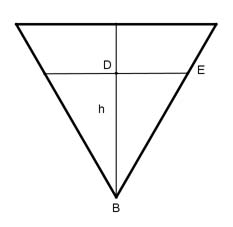
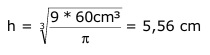

Aufgabe 244 Der Achsenschnitt eines kegelförmigen Messbechers ist ein gleichseitiges Dreieck mit einer Seitenlänge von 10 cm. In welcher Höhe von der Spitze aus muss die Markierung angebracht werden, die eine Füllung von 60 cm³ anzeigt?  Gesucht ist BE. DE = r BE = 2 * r wegen gleichseitigem Dreieck Satz von Pythagoras im Dreieck BED: BE² = DE² + h²|-DE² h² = BE² - DE² = (2 * r)² - r² = 4 * r² - r² = 3 * r² |:3 h² r² = ---- |√ 3 h r = ---- √3 h л * (-----)² * h л * r² * h √3 V = ------------- = ------------------- 3 3 л * h² * h V = ------------- |*9 9 9 * V = л * h³ |:л 9 * V h³ = ------- л  5,56 cm r = ---------- = 3,21 cm √3 BE = 2 * 3,21 cm = 6,42 cm